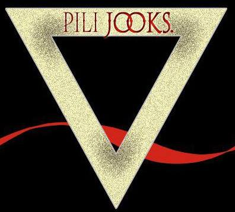

Algo de la banda
Pili Jooks es una banda formada en 2010 por un grupo de amigos oriundos de Longchamps (Zona sur de gran
Buenos Aires).
Entre 2010 y 2014 se presentó en distintos escenarios de la zona, consolidando su identidad musical
dentro de la escena local.